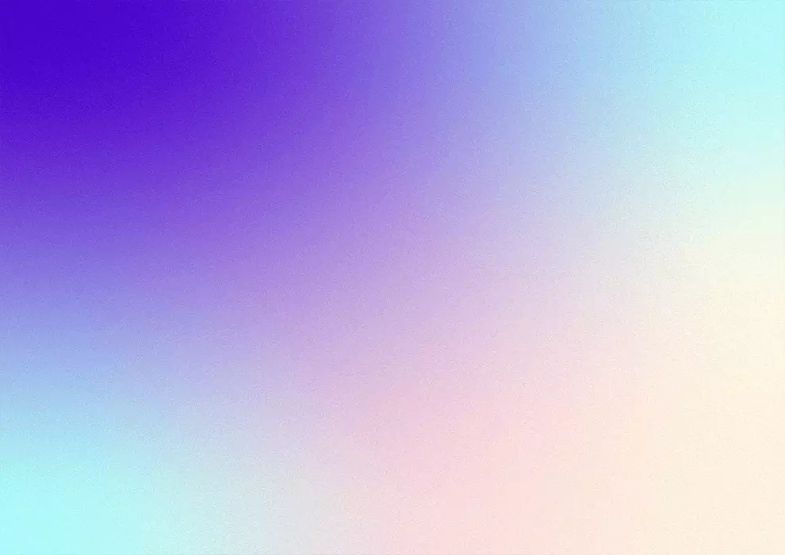

Xperience
Xperia

{{projects[1].title}}
Tools
- {{tool}}
This is a web design project inspired by Sony Xperia line up. I have designed a unique website that presents as “out of this world” and emphasises the key features of the phone. I have used grainy gradient textures to represent a stylised space and the phones coming out from there. Because of how the phones are so unique this inspired me to have a unique approach to the layout as well.
Year
{{projects[1].year}}